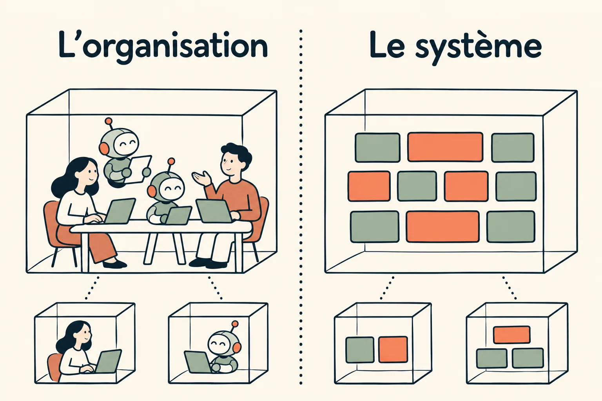
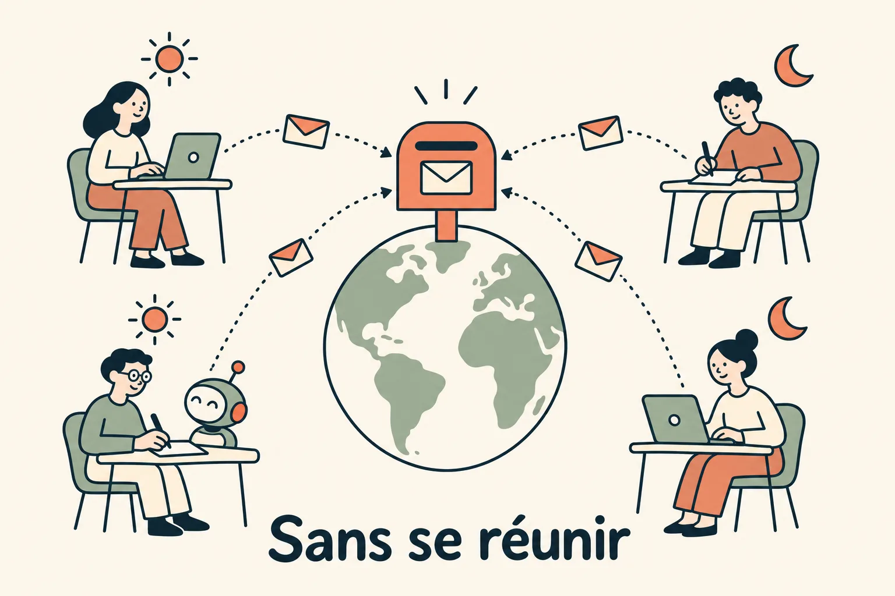
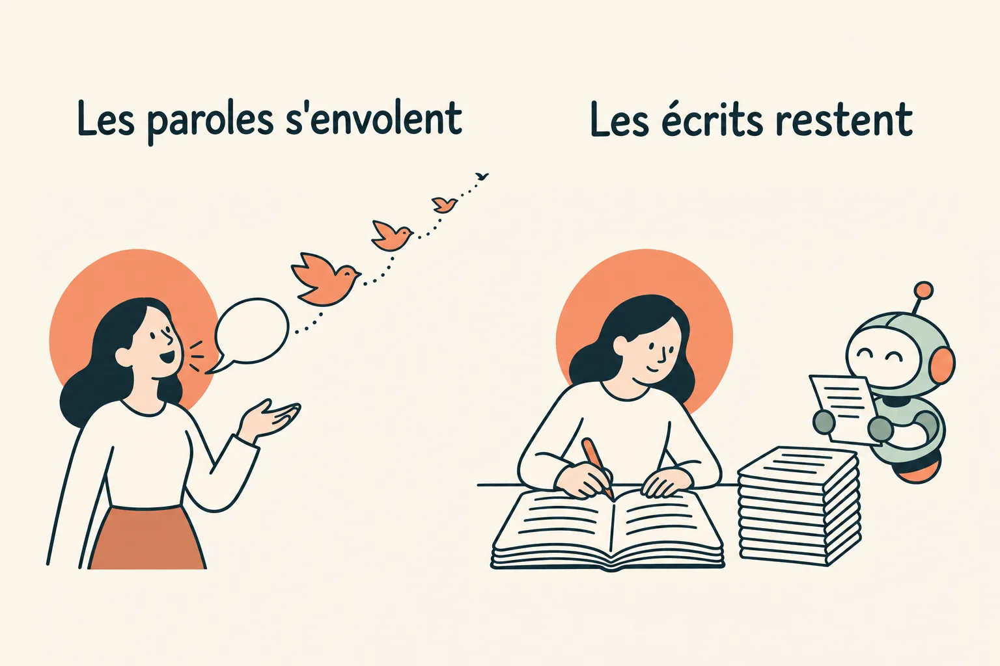
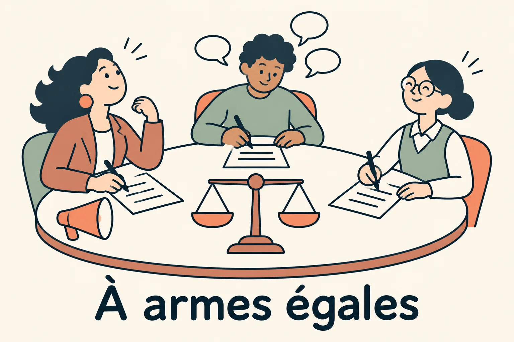
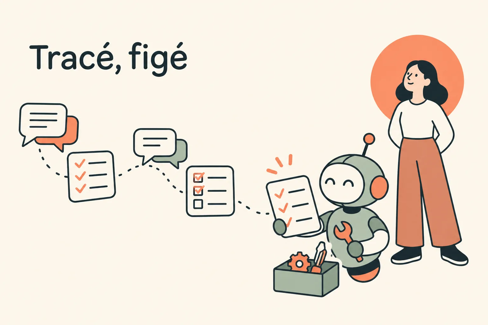

Une culture de l'écrit
Des agents qui travaillent seuls ont besoin de contexte écrit, et une équipe qui travaille avec eux aussi. Tout passe par la messagerie, en fil. Les réunions sont rares et chacune laisse une trace écrite, parce qu'une décision prise à l'oral échappe au collègue absent comme à l'agent.
Pourquoi écrire
On y arrive en 5 étapes.
1. Le système ressemble à l'organisation
En 1968, l'informaticien Melvin Conway observait qu'une organisation qui conçoit un système en produit un dont la structure copie celle de sa communication. On l'appelle depuis la loi de Conway. Elle joue dans les deux sens : un système dit comment l'équipe se parle, et changer l'un finit par changer l'autre.
Une organisation transparente produit donc un système à son image : un cœur commun, lisible par tous, et des projets autour, autonomes, reliés par des contrats plutôt que par du code partagé.

Notre monorepo traduit cette culture : l'app et la data platform dans le même dépôt, lisible par tous, humains et agents, avec un propriétaire par périmètre. Les projets annexes, comme ce dossier, vivent dans leurs propres dépôts, sans couplage avec le reste.
2. L'open source l'a prouvé, des entreprises ont suivi
Les plus grands logiciels libres se construisent à des milliers de contributeurs, sur tous les fuseaux horaires, entre des gens qui pour la plupart ne se sont jamais vus. Dans le noyau Linux, le serveur web Apache ou le langage Python, l'essentiel se propose, se discute et se décide par écrit, sur des listes de diffusion et dans les revues de code. À la fondation Apache, la règle tient en une phrase : si ce n'est pas sur la liste, ça n'a pas eu lieu. Ces projets ont bien des conférences et des sommets de mainteneurs, mais aucune décision n'y échappe à l'écrit.
Des entreprises ont repris ce modèle. GitLab, qui travaille entièrement à distance, décrit tout son fonctionnement dans un handbook public : un processus s'y écrit avant d'être appliqué. En France, Alan l'a poussé jusqu'à la transparence radicale : les décisions s'écrivent, les réunions sont le dernier recours, et tout le monde sait tout, levées de fonds et départs compris.

Notre transparence radicale vient d'Indy : Adrien, l'un de nos cofondateurs, avait cofondé Indy avant Wavo, et il en a apporté la culture.
3. Parler moins, écrire pour durer
L'oral a ses vertus, mais il s'évapore. Une idée dite en réunion reste latente : chacun en garde sa version, que personne ne peut relire. Écrite, elle devient explicite et durable. Le proverbe latin le disait déjà : les paroles s'envolent, les écrits restent. Parler moins, c'est déposer sa pensée là où elle survivra à la conversation.
Écrire oblige aussi à penser. Une phrase écrite doit tenir seule, sans le ton, sans les gestes, sans la possibilité de rectifier au vol. Ce qui ne tient pas à l'écrit n'était souvent pas encore clair.

4. Rééquilibrer les voix
Une réunion avantage ceux qui parlent le mieux, le plus fort ou le plus longtemps. L'écrit redistribue les cartes. Les beaux parleurs doivent figer leurs promesses noir sur blanc, où elles se relisent et se vérifient. Les bavards doivent faire l'effort de formaliser leur pensée, et de la raccourcir. Les timides, qui n'auraient pas coupé la parole, y trouvent leur place : leur message se lit comme celui des autres.

5. Tracé, figé, et lisible par l'IA
Un agent n'assiste pas aux réunions. Ce qui se décide à l'oral est perdu pour lui, comme pour le collègue absent. Un fil, une tâche, un plan ou une PR bien écrits, eux, peuvent lui être donnés tels quels comme contexte (Contexte). Écrire était au départ un choix d'organisation ; avec des agents, c'est devenu une condition pour leur déléguer du travail. Et chaque trace écrite nourrit la mémoire de l'équipe (Mémoire).

Écrire d'abord, se réunir si besoin
- Une réunion se prépare par écrit. Les sujets sont posés dans un fil avant une heure limite. Si aucun sujet n'arrive, la réunion est annulée.
- Une réunion se conclut par écrit. Les actions sont notées dans le même fil, avec leur porteur, et ce fil sert de compte rendu.
- On pose le problème d'abord. Un sujet commence par la douleur et ses variantes ; la solution vient après, et souvent de quelqu'un d'autre.
- Le point quotidien est un fil où chacun écrit, pas un appel.
- Les rendez-vous externes laissent une trace : un message par rendez-vous, avec une synthèse, et les retours de l'équipe en fil.
Un canal par usage, les humains en fil
- Chaque canal a un usage et un format connus : un guichet de demandes, un canal d'annonces, un atelier d'outillage, des canaux d'alerte.
- Les bots postent, les humains répondent en fil. Une alerte, une étape de cycle de vie, un récapitulatif : chaque événement a son message, et la discussion reste accrochée à lui.
- Un dossier, un fil, qui peut vivre des mois : toute l'histoire reste au même endroit.
- Les annonces s'écrivent comme de petits emails : l'objet en gras en tête, le détail en fil.
Le travail lui-même est un document
- La tâche s'écrit au même gabarit pour tous : « Quand ..., je veux ..., pour ... », puis des critères d'acceptation vérifiables. Le même texte sert d'entrée à un agent.
- Le plan d'une tâche lui est rattaché et se met à jour à chaque push sur sa branche, ce qui montre où en est la réflexion en plus du code.
- La PR porte sa description, le résumé d'architecture généré par la CI, et bientôt le rapport de preuves.
- Les tâches post-merge (une migration ponctuelle, un script à lancer) sont postées dans le fil de la PR plutôt que gardées en tête. en place
- Les notes de version sont générées à partir des tâches livrées et publiées dans le canal concerné.
Tout est sur Slack. Le kickoff hebdomadaire du lundi se prépare dans un fil où les sujets arrivent avant 9 h ; sans sujet, il saute. Les tâches, features et plans vivent dans Odette, notre outil de pilotage interne, qui écrit aussi dans Slack. Les alertes de production ont leurs propres canaux, et une session Claude y répond en fil.
À essayer chez vous
- Laissez le système suivre l'organisation : un cœur commun lisible par tous, des projets annexes autonomes.
- Pas d'ordre du jour écrit, pas de réunion. Pas d'action écrite, pas de décision.
- Le problème avant la solution.
- Un événement, un message ; la discussion en fil.
- Un gabarit unique pour les tâches, lisible par un humain et par un agent.